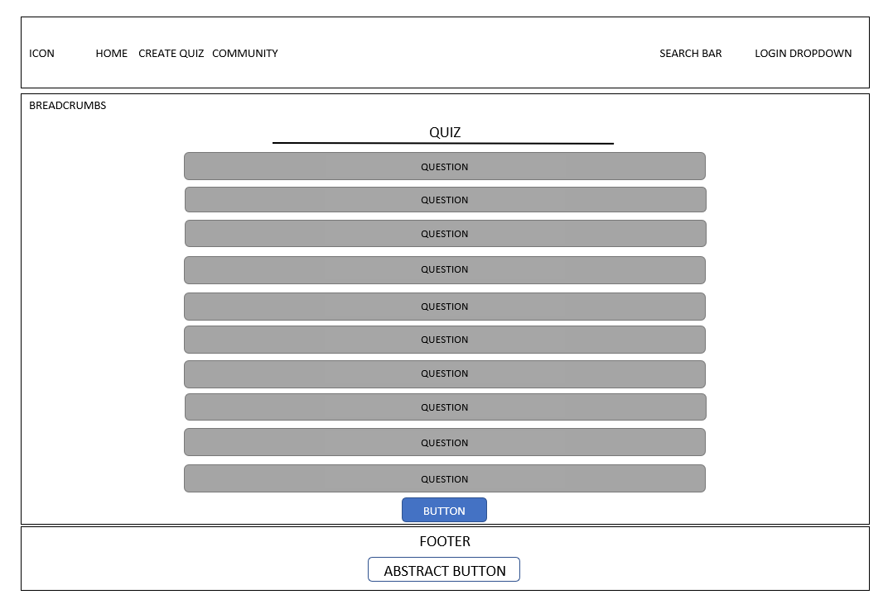

ABSTRACT
&
DOCUMENTAZIONE
Abstract
SOUNDTRACK.QUIZ è un sito di infotainment, quindi ricreativo e ludico, dove gli utenti possono giocare a dei quiz già impostati su colonne sonore di vari film, video games, serie TV o animated movies.
L’idea di base è quella di fornire agli utenti, una volta strutturato a pieno il sito, una piattaforma tramite cui poter giocare con i propri amici e familiari, creare i propri quiz e far parte di una community che condivide le stesse passioni: la musica e il cinema.
Il target di questo sito comprende sia utenti singoli o gruppi che hanno già una cultura di base relativa al mondo delle colonne sonore, che esperti in merito curiosi di mettere alla prova i loro conoscenti.
Project Management Plan
Benchmarking
L’obiettivo del mio progetto è offrire un’occasione di svago per singoli utenti o per gruppi, e fare informazione, anche se indirettamente e sinteticamente, sulle curiosità connesse alla musica della pop culture che ha cambiato il corso della storia del cinema.
I contenuti sono strutturati sul sito in base al target primario scelto. Quindi, essendo il target tendenzialmente giovane e potenzialmente internazionale, ho usato immagini e icone esplicative per alleggerire il testo, un registro comunicativo informale, sintetico e giocoso.
Per quanto riguarda i competitor, avendo consultato blog sull’argomento e Similarweb.com per verificare la reputazione dei vari provider, ho preso in considerazione due siti. Ho valutato quest’ultimi, usando una likert scale da 1 a 5 (dove 1 significa per nulla soddisfacente e 5 molto soddisfacente), in base a parametri e criteri scelti coerentemente al tipo di sito esaminato: servizi, usabilità e originalità dei contenuti.
Sporcle.com
• Servizi = 4. Il sito offre diversi servizi gratuiti interessanti, tra cui la possibilità di creare il proprio quiz, la possibilità di giocare in gruppo, di dare un voto ai quiz e di unirsi alla community.
• Usabilità = 2. Il sito è sì graficamente coerente, ma anche di difficile utilizzo data la presenza di fin troppe pagine e materiale consultabile.
• Originalità dei contenuti = 5. Ho trovato particolarmente lodabile il link interno relativo alla community, che contiene sezioni e articoli su come segnalare i bugs e le issues, consigli su come costruire quiz, chat su argomenti correlati al sito, e molto altro.
Popkwiz.com
• Servizi = 2. Il sito offre pochi servizi (Contact e Info) i quali risultano facilmente usabili e sintetici. Non sembra offrire la possibilità di scegliere il tempo di gioco o di registrarsi (opzioni molto comuni in siti di entertainment).
• Usabilità = 4. Il sito è molto intuitivo grazie alla sua chiarezza e staticità grafica (essendo una one-page website senza alcun tipo di menu).
• Originalità dei contenuti = 2. Il sito offre solo la possibilità di scegliere il decennio su cui testare le proprie conoscenze musicali.
In conclusione, a questi siti manca principalmente la possibilità di poter personalizzare il gioco a proprio piacimento, la presenza di connessioni ai social media e di approfondimenti sulle risposte dei quiz.
Inoltre, ho trovato particolarmente efficaci e riusabili:
• Le scelte relative alla community di Sporcle.com.
• La sinteticità, così di successo, di Popkwiz.com.
Struttura e layout
Architettura del sito, il grafico ad albero:
Wireframe della Home e della Quiz page, a cui si può accendere tramite il primo tasto PLAY NOW presente sotto la barra di navigazione principale:


Il design strutturale è basato sullo scrolling, tuttavia ho comunque inserito diversi tasti, graficamente coerenti, per raggiungere i vari quiz. In merito a ciò, ho reso il sito più interattivo facendo sì che questi tasti, una volta toccati dal cursore dell’utente, cambino colore.
Per quanto riguarda la progettazione di una digital identity tramite le scelte grafiche, ho scelto un logo (posizionato a sinistra del menu di navigazione primario) e ho utilizzato due variazioni dello stesso font, per rendere la lettura più confortevole, e quattro colori diversi.
Ho scelto Roboto Slab (serif) per il titolo del sito web, per i titoli delle sezioni principali e per i tasti, mentre Roboto (sans-serif) è stato scelto per i testi più lunghi proprio perché meno particolare e più leggibile.
Nonostante la maggior parte delle scritte siano in bianco o in nero, date le tonalità molto decise del turchese (#35DCCB) e del rosso (#DC3546), ho deciso di inserire tutti gli elementi con queste precise colorazioni, quindi senza mai inserire una sfumatura di esse.
Linguaggi e strumenti
I linguaggi web utilizzati: HTML e CSS.
Gli strumenti tecnologici usati a supporto della progettazione web: Bootstrap per la grafica, Font Awesome per le icone, Google Font per i font, Coolors per la palette, Google immagini e Pexels per le free copryright images, Github per la pubblicazione, PowerPoint per il grafico ad albero e il wireframe, Google Analytics per le visualizzazioni.
Infine, per l’inserimento di audio senza copyright: Youtube, Online Video Converter.pro, 123apps Computer Software Est.
Communication Strategy
Ho provato a rendere il sito coerente e intuitivo grazie all’interruzione dei blocchi di testo e all’utilizzo del grassetto, di colori differenti e di dimensioni maggiori per i testi più importanti. Inoltre, ho cercato di semplificare la fruizione dei contenuti del mio progetto, e renderlo facilmente navigabile per l’utente, grazie alla barra di ricerca e alla sua coerenza grafica e comunicativa.
Il mio obiettivo principale era di creare contenuti efficacemente e intuitivamente fruibili attraverso valide strategie comunicative come: l’inserimento di immagini descrittive, in quanto elementi di interruzione del pattern di lettura, e di ampi margini laterali.
Il target utente primario è composto da under 35 appassionati di musica, di cinema e di video games con delle conoscenze di base sull’utilizzo di piattaforme web. Nonostante ciò, la semplicità delle logiche di navigazione e della struttura del progetto non escludono utenti over 35 che stanno avendo il loro primo approccio con l’Internet.
Invece, riguardo il target secondario, ho comunque preso in considerazione il fatto che un utente casuale possa usufruire del sito. Proprio per questo motivo ho scelto di inserire domande molto semplici e varie nel primo test a cui si può accedere (il quiz immediatamente sotto la scritta SOUNDTRACK.QUIZ), così da non escludere o scoraggiare dall’utilizzo della pagina web utenti che non sono intenditori ma a cui piacerebbe informarsi con un metodo alternativo. La natura ludica del progetto, quindi, è utile al fine di diffondere la conoscenza e aumentare l’engagement verso questo argomento anche nei meno vicini al mondo della musica.
Da menzionare è anche:
• L’organizzazione dei contenuti, la quale è certamente task-based, in quanto ogni sezione corrisponde a un tipo di azione che l’utente vuole compiere sul sito web.
• L’inserimento di call to action (Log in, Play now, Send).
• L’accessibilità del sito data grazie all’uso della lingua inglese.
• L’usabilità resa tramite i tasti interattivi, gli ancoraggi visivi nella navigazione, la struttura non profonda e confusionaria, le keyword, le bread crumbs, l’uso di testi brevi, concisi e descrittivi.
• L’inserimento di tag appropriati, di nomi intuitivi per le immagini e di @alt, ma anche l’attenzione posta verso la corretta metadatazione dei contenuti e di nomi intuitivi per gli url.
• La grafica del sito, essendo molto simile a quella di altri trivia web site già consolidati su Internet, risulterà familiare e usabile.
Per quanto riguarda i contro della Communication strategy del sito:
• La responsiveness ancora abbozzata.
• La presenza di mock up di servizi fondamentali come la sezione Create quiz, Community, Log in, Search quiz, dell’invio del feedback e anche dei vari trivia presenti nella Home.
Promozione
Ho scelto di promuovere il sito attraverso un post di Facebook, una storia di Instagram e inviando un messaggio promozionale su diversi gruppi WhatsApp.
Valutazione dei risultati
Per misurare il successo del progetto ho scelto di monitorare il numero di visite sul sito grazie a Google Analytics, di raggiungere almeno 10 like su Facebook e ottenere almeno 10 visualizzazioni della storia di Instagram (se il raggiungimento di questi obiettivi sia andato a buon fine verrà mostrato nella presentazione).